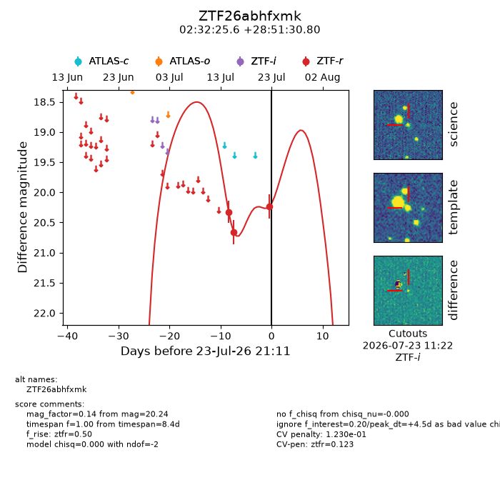
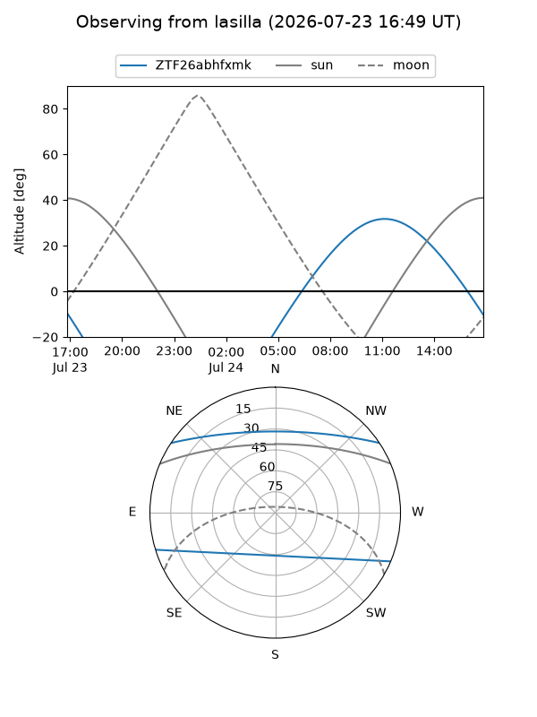
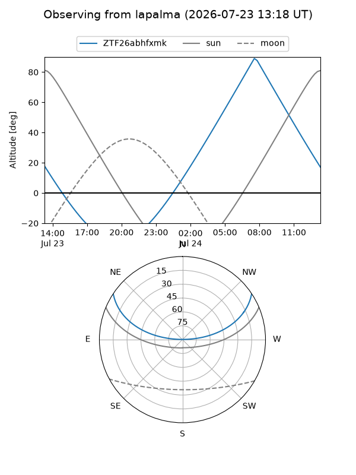
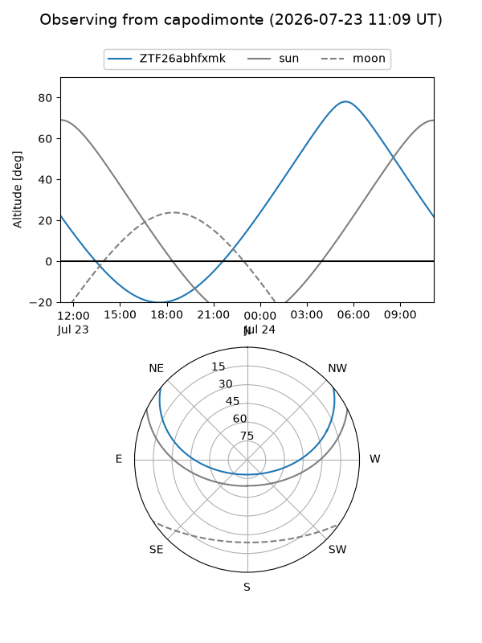
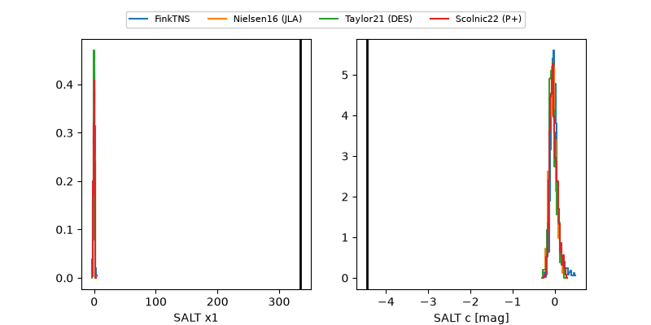

ZTF26abhfxmk
Target ZTF26abhfxmk at 2026-07-23 21:14
Aliases and brokers:
FINK-ZTF: ztf.fink-portal.org/ZTF26abhfxmk
Lasair-ZTF: lasair-ztf.lsst.ac.uk/objects/ZTF26abhfxmk
ALeRCE-ZTF: alerce.online/object/ZTF26abhfxmk
Direct TNS query: direct search
alt names
ZTF26abhfxmk (ztf,fink_ztf)
Coordinates:
equatorial (ra, dec) = 38.1068,+28.85856
equatorial (HMS+DMS) = 02:32:25.62,+28:51:30.80
galactic (l, b) = (148.2181,-29.00761)
Flags:
peak dt: +4.5
likely cv: !!
Photometry:
last ztfr=20.24
3 ztfr detections
Lightcurve

Visibility



Additional plots
